순공대장 현재 전체 화면을 실제 렌더 캡처해서, SOO-93에서 티어다운한 회독 리텐션 레퍼런스 6종(듀오링고·Finch·Anki·Memrise·Quizlet·Brilliant)과 좌우로 나란히 비교한다. 한눈에 현재 → 레퍼런스 → 갭이 보이도록 구성했고, 각 갭이 SOO-94 P1~P5 제안 중 무엇으로 메워지는지 연결했다.
마스코트 mood 분기 · 기억HP 0–5 정수 · 라이트 동반자 톤은 듀오링고/Habitica의 다크패턴을 구조적으로 피하고 있다. 아래 P1~P5는 모두 코어 회독 루프를 그대로 두고 마감재만 더하는 저(低)브랜드리스크 영역이다.
첫 회독 전·큐 0건일 때 순공이가 기다리는 동반자 화면. 현재 완전 미구현(최대 공백).
"○○단원에 물 줄 시간이래요"식 돌봄 넛지·푸시. 협박/죄책감 금지.
홈에 "오늘 회독 N개"를 Anki식 정수 카운트로 명확화. 데이터는 이미 존재 → 표시만.
끊겨도 순공이가 하루 막아줌. 무료·죄책감 0(유료 repair 거절).
정수 단계·은유 상태로(백분율 금지). 기억HP 0–5 체계의 단원 단위 확장.
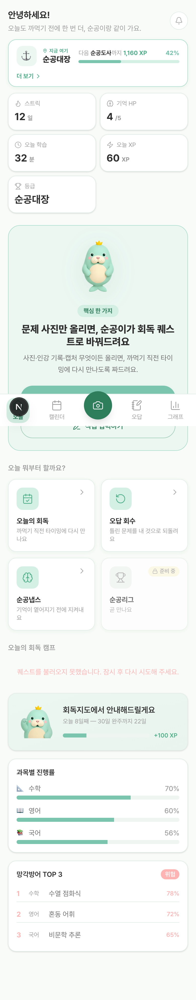
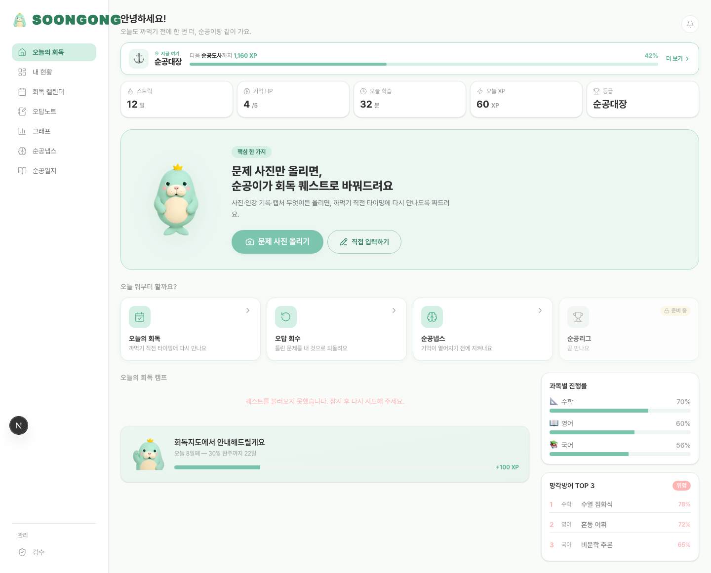
/today?first=1 첫진입 변형은 있으나 "기다림" 빈상태는 아님)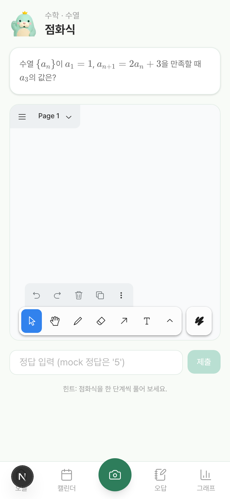
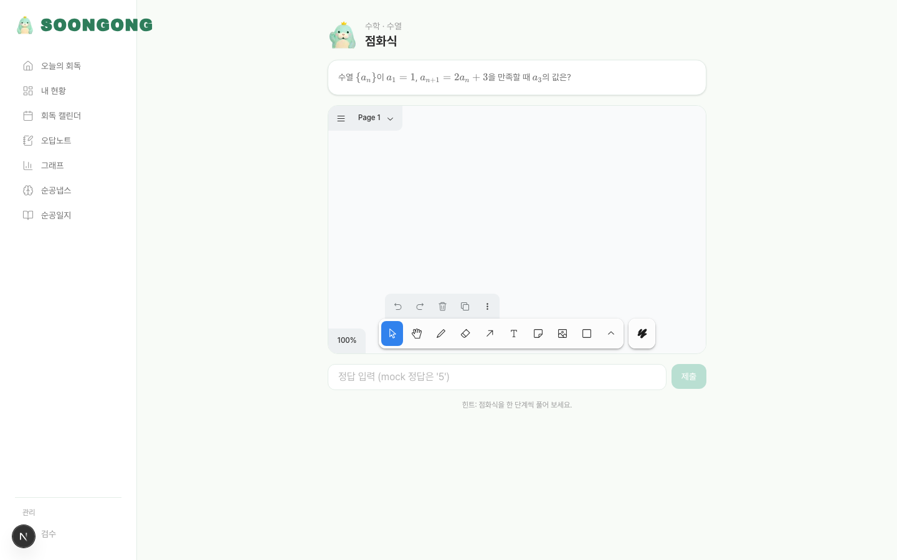
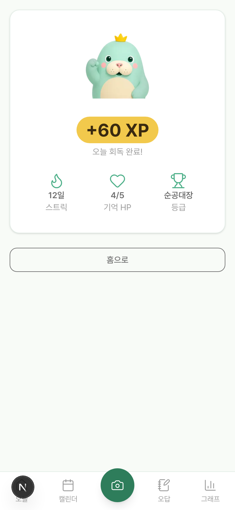
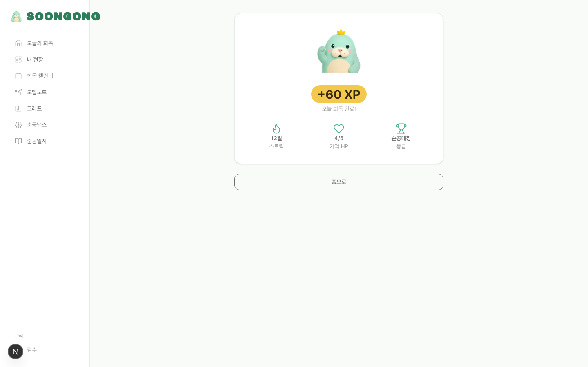
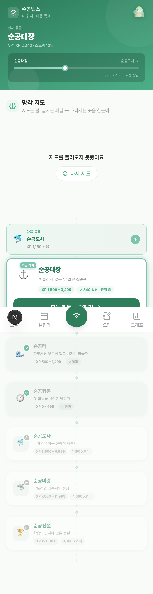
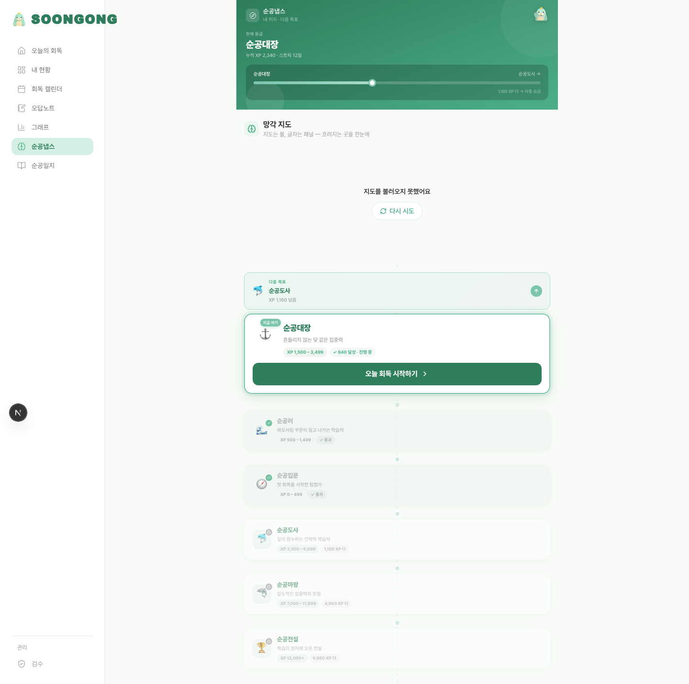
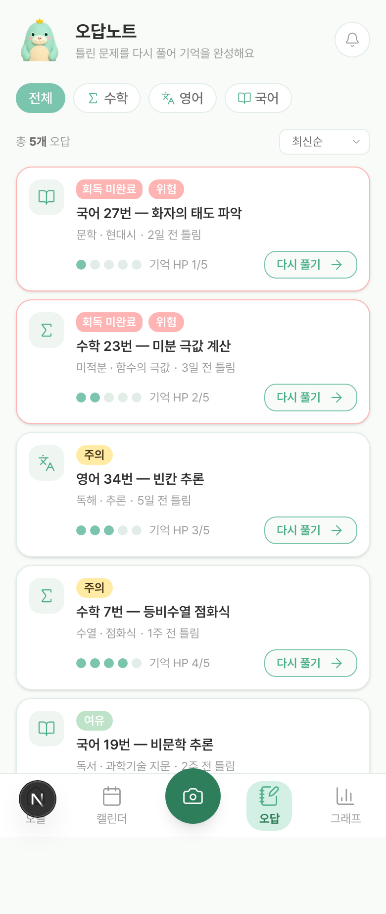
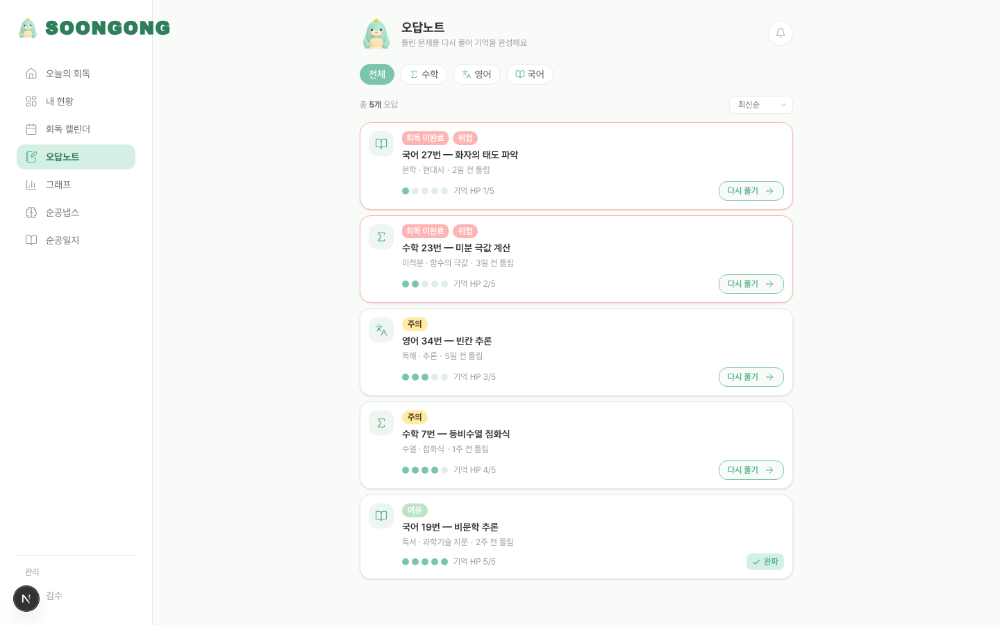
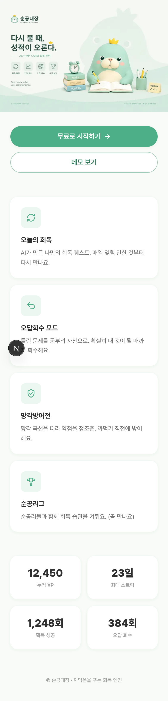
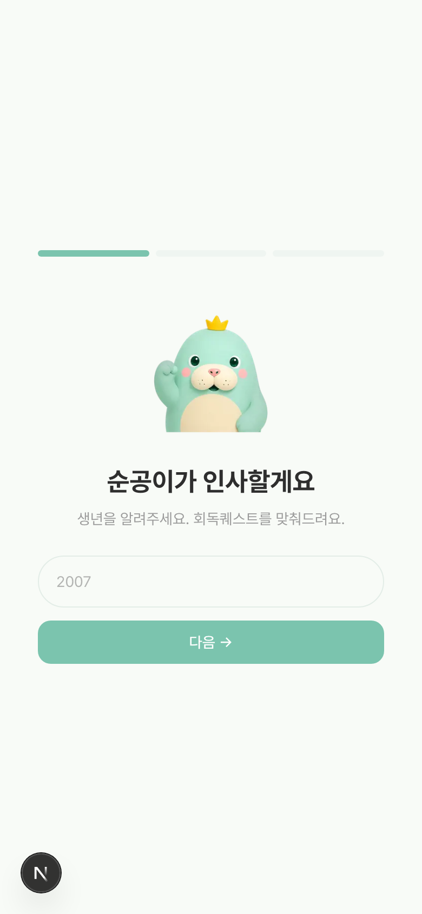
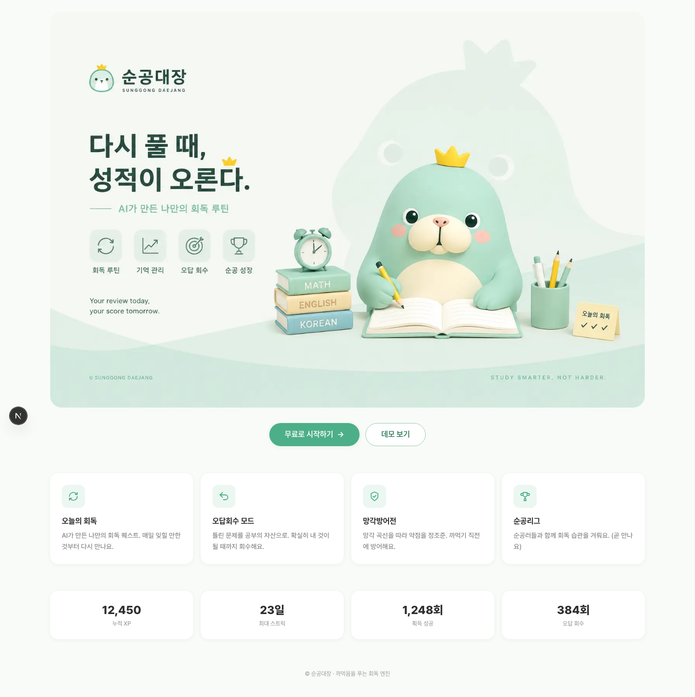
NudgeProvider 구조와 Bell 버튼 UI 스텁만 존재. 돌봄 톤 리마인드 카피·스케줄러 로직은 ✗. (홈 캡처의 우상단 🔔이 그 스텁)순공대장은 현재 오른쪽(거절) 패턴을 하나도 쓰지 않는다. 위 제안은 전부 왼쪽(차용)에서, 색·마스코트·토큰을 건드리지 않고 기능·플로우·UX 마감재만 더하는 방향이다.
| 차용 ✅ (동반자 톤 유지) | 거절 ❌ (다크패턴 / 브랜드 위반) |
|---|---|
| Play-first 온보딩 (가치 먼저) | passive-aggressive 카피 ("You let Duo down") |
| Streak Freeze (불안완화, 무료) | 유료 streak repair / hearts 결제 유도 |
| 돌봄 톤 리마인드 ("물 줄 시간") | 빨강 하트 차감 / 잦은 압박 푸시 |
| 비-처벌 빈 상태 (기다림) | HP death · 캐릭터 데미지 (Habitica) |
| due 큐 정수 노출 | 백분율 · 하트게이지 위계 |
| 숙련도 정수 · 은유 시각화 | 파티 연좌 데미지 (사회적 죄책감) |
| 마스코트 mood = 성과 (이미 보유) | 아이템샵형 하드 과금 게이팅 |